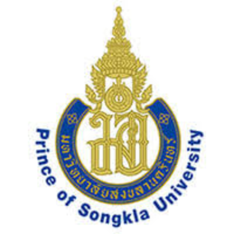
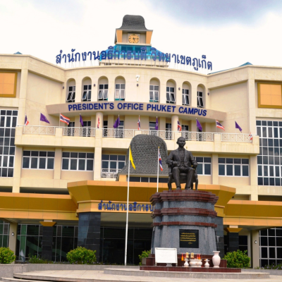
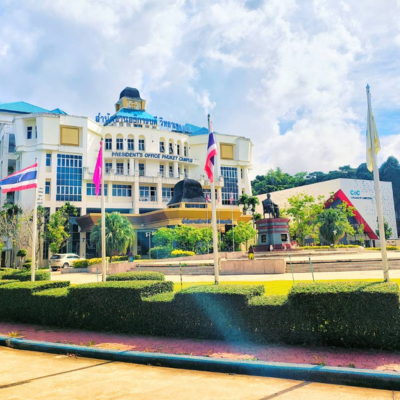

Songkla University



Prince of Songkla University, established in 1967 in southern Thailand, is one of the country’s leading public universities and a center of higher education and research in the region. With strong programs in medicine, engineering, science, agriculture, social sciences, and the arts, the university emphasizes academic excellence, research innovation, and community development. Committed to sustainable development and regional advancement, Prince of Songkla University prepares students to become skilled professionals and responsible leaders who contribute to both Thailand and the international community.